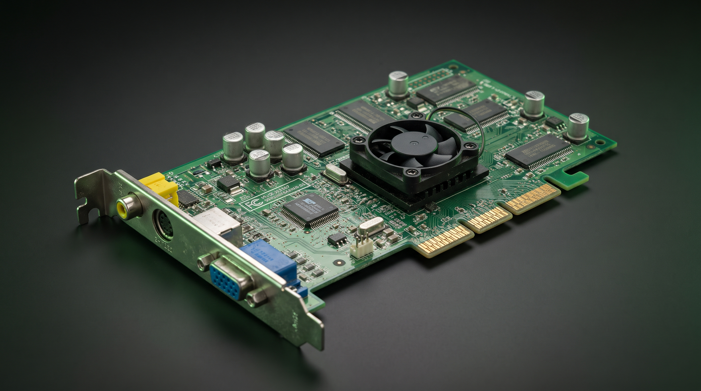
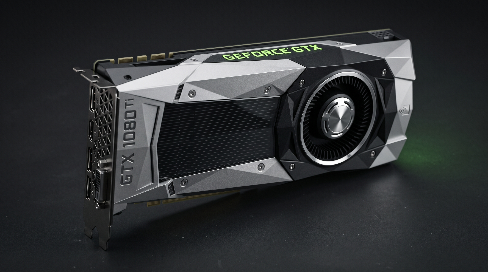
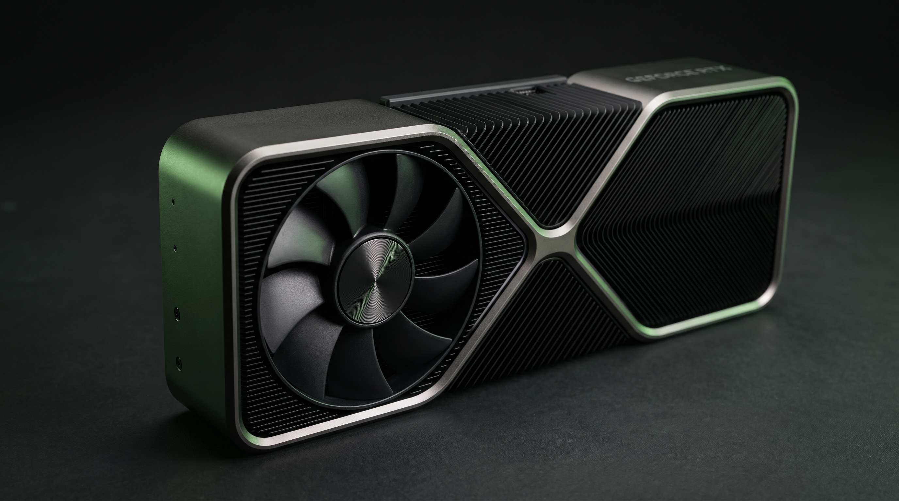

1993–1999: Народження GPU
Від перших експериментів з мультимедіа до RIVA TNT та першого у світі GPU GeForce 256.
Детальніше ↓Еволюція графічних процесорів від 1993 року до ери штучного інтелекту
Обери епоху на картці, щоб перейти до детального розбору архітектури, ключових рішень та знакових відеокарт.

Від перших експериментів з мультимедіа до RIVA TNT та першого у світі GPU GeForce 256.
Детальніше ↓
Уніфікована архітектура Tesla, поява обчислень CUDA та золотий стандарт лінійки GTX 1000.
Детальніше ↓
Трасування променів у реальному часі, тензорні ядра та реконструкція кадрів через DLSS.
Детальніше ↓Компанію NVIDIA заснували 5 квітня 1993 року інженери Дженсен Хуанг, Кріс Малаховскі та Кертіс Пріем із початковим капіталом $40 000. У середині 90-х ринок ПК-графіки переживав хаотичний бум: десятки виробників просували власні закриті стандарти 3D-рендерингу. Перший комерційний продукт компанії — NV1 (1995) — був амбітною картою «все в одному» з 3D-прискорювачем, звуковою підсистемою та портами для геймпадів Sega Saturn. Проте архітектура NV1 будувала зображення з квадратичних поверхонь замість звичних трикутників, а вихід Microsoft DirectX остаточно зробив цей підхід несумісним із майбутніми іграми.
На межі банкрутства компанія зробила ставку на класичний полігональний рендеринг і у 1997 році випустила RIVA 128 — надшвидкий для свого часу чип, який розійшовся тиражем понад мільйон екземплярів за перші чотири місяці. Закріпили успіх лінійки RIVA TNT та TNT2 (1998–1999): назва розшифровувалася як TwiN Texel, оскільки чип уперше вмів накладати два пікселі за один такт, що дозволило нав'язати пряму боротьбу тодішньому монополісту ринку — 3dfx Voodoo.
Головний переворот стався у жовтні 1999 року з релізом GeForce 256. Саме тоді NVIDIA вперше в історії використала термін GPU (Graphics Processing Unit). До цього відеокарта лише «розмальовувала» вже пораховані процесором фігури, але GeForce 256 отримала апаратний блок Transform & Lighting (Hardware T&L), взявши на себе обчислення геометрії та джерел світла. Це вдвічі розвантажило центральні процесори та відкрило дорогу складним тривимірним світам на кшталт Quake III Arena.
На початку 2000-х відеокарти навчилися працювати з програмованими шейдерами (лінійки GeForce FX та GeForce 6/7), але сам чип залишався жорстко поділеним на дві частини: вершинні процесори та піксельні конвеєри. Якщо в сцені було багато дрібних об'єктів, вершинні блоки задихалися від навантаження, тоді як піксельні простоювали — і навпаки. У листопаді 2006 року архітектура Tesla (GeForce 8800 GTX) повністю зламала цю схему: NVIDIA замінила спеціалізовані блоки на масив зі 128 універсальних потокових процесорів, кожен із яких міг виконувати будь-який тип задач.
Разом із GeForce 8800 GTX компанія представила програмну платформу CUDA. Вона дозволила програмістам писати код мовою C/C++ безпосередньо для ядер відеокарти. Якщо один процесор мав 2–4 потужні ядра для послідовних задач, то GPU отримав сотні легких ядер для масових паралельних розрахунків. Так ігрова відеокарта перетворилася на робочий інструмент для фізичного моделювання, рендерингу відео, медицини та перших експериментів із глибоким навчанням.
Після «гарячої» архітектури Fermi (GTX 400/500) інженери NVIDIA сфокусувалися на енергоефективності в поколіннях Kepler (GTX 600/700) та Maxwell (GTX 900), де легендарна GTX 750 Ti довела, що ігрова карта може працювати взагалі без додаткового живлення. Абсолютною вершиною класичної епохи стала архітектура Pascal (2016–2017, 16 нм): народна GTX 1060 роками очолювала рейтинг найпопулярніших відеокарт світу в Steam, а флагманська GTX 1080 Ti з 11 ГБ пам'яті GDDR5X отримала такий колосальний запас продуктивності, що залишалася актуальною для ігор у Full HD та 2K навіть через сім років після виходу.
До кінця 2010-х класична растеризація (метод побудови картинки, який використовувався з 90-х) підійшла до своєї візуальної межі: розробники ігор змушені були імітувати відбиття у воді, дзеркалах і склі за допомогою складних трюків, які часто ламалися при повороті камери. У серпні 2018 року з анонсом архітектури Turing (серія RTX 20) NVIDIA змінила назву лінійки з GTX на RTX і впровадила гібридний рендеринг. На кристал уперше додали два принципово нові типи обчислювальних блоків: RT-ядра для апаратного розрахунку траєкторії світлових променів у реальному часі та тензорні ядра для роботи нейромереж.
Оскільки повноцінне трасування променів вимагало величезних обчислювальних ресурсів і сильно знижувало частоту кадрів, другою опорою нової епохи стала технологія DLSS (Deep Learning Super Sampling). Навчена на суперкомп'ютерах нейромережа навчилася відновлювати деталізоване зображення у високій роздільній здатності з кадру нижчої якості. Якщо перша версія DLSS часто «милила» картинку, то вже в поколінні Ampere (RTX 30, 2020) алгоритм DLSS 2 став еталоном масштабування, часто перевершуючи за чіткістю нативне згладжування.
У лінійках Ada Lovelace (RTX 40, 2022) та Blackwell (RTX 50, 2025) акцент остаточно змістився в бік нейронного рендерингу. Відеокарти навчилися не лише масштабувати пікселі, а й передбачати рух об'єктів та генерувати цілі проміжні кадри (Frame Generation та Multi Frame Generation у DLSS 4), що зробило можливим кінематографічний Path Tracing у 4K. Паралельно архітектура тензорних ядер вивела NVIDIA у світові лідери інфраструктури штучного інтелекту.